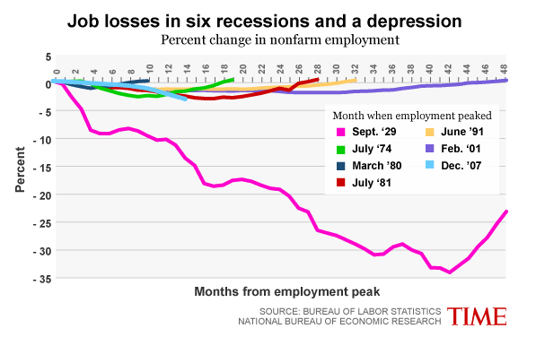

MISSION
We started Data Collective because it's way too hard to get simple numerical facts about the world. In sports or business, you could never understand what's going on without the basic stats. We feel the same way about the rest of life.
Our secret plan is to make it really easy for people to be better informed, and then make it really easy for people to share interesting facts with everybody.
We are a non-profit and strive to be non-partisan and unbiased.
CHARTS
Our first project is a next-generation Chart for the web.
Most charts on the web today are simply pictures. For example:
It's a neat chart, but it doesn't let the reader do some important things:
- Find the exact source of the data. BLS and NBER have thousands of data sets. Which were used in making this chart?
- Get the raw underlying data, in order to put into a different kind of chart
- Follow the data back to its source. For example, in the chart above, not all recessions since 1929 were depicted. Wouldn't it be interesting to see what those other recessions look like? Perhaps they would tell a different story.
- Combine the data underlying this chart with other interesting data. For example, color the lines to indicate which party was in the White House.
You can click on the link in the Source section to go to the chart's home page, where you can:
- get the raw data
- find out exactly where the data comes from
- see who created the chart
- discuss the chart with other data nerds
- and, in the future, do other cool things like:
- see other charts on the same topic
- export the chart into a wikipedia article
WHAT YOU CAN DO
Email us at dsjoerg at datacollective dot org to:
- Make charts! We are currently in closed alpha. We would love to work with you to make great charts for your website, blog or newspaper. (After a while we'll have a spiffy web page where you can make your own charts).
- Join us! We are looking for engineers, writers, data enthusiasts and every kind of smart cool person to join us.
- Let us know what you think!
WHO WE ARE
The Data Collective team is David Joerg, Andrew Neitsch and Mark Smith.